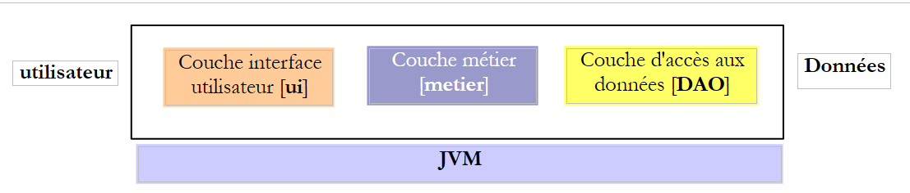
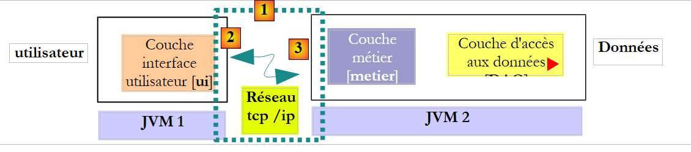
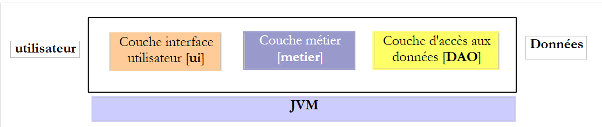
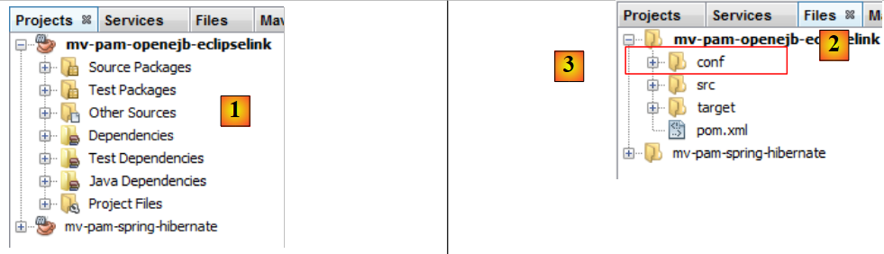
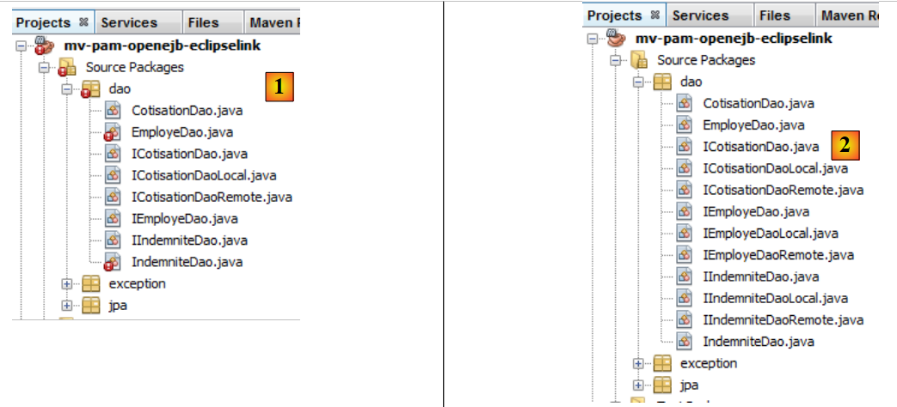
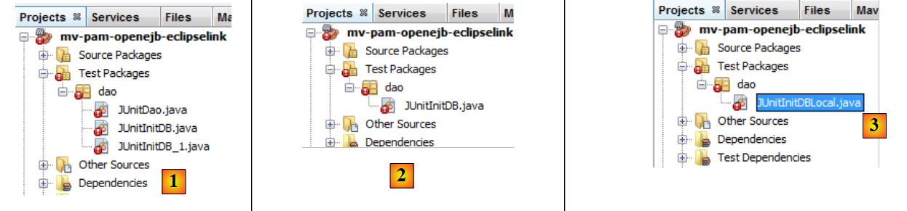

6. Version 2: Architecture OpenEJB / JPA
6.1. Introduction to Porting Principles
Here we present the principles that will govern the porting of a JPA / Spring / Hibernate application to a JPA / OpenEJB / EclipseLink application. We will wait until Section 6.2 to create the Maven projects.
6.1.1. The two architectures
The current implementation with Spring / Hibernate
 |
The implementation to be built with OpenEJB / EclipseLink
 |
6.1.2. Project libraries
- The [DAO] and [metier] layers are no longer instantiated by Spring. They are instantiated by the OpenEJB container.
- The Spring container libraries and its configuration are removed in favor of the OpenEJB container libraries and its configuration.
- The libraries of the JPA / Hibernate layer are replaced by those of the JPA / EclipseLink layer
6.1.3. Configuration of the JPA / EclipseLink / OpenEJB layer
- The [META-INF/persistence.xml] file configuring the JPA layer becomes the following:
- Line 3: Transactions in a EJB container are of type JTA (Java Transaction API). They were of type RESOURCE_LOCAL with Spring.
- line 9: the JPA implementation used is EclipseLink
- Lines 5–7: Entities managed by the JPA layer
- Lines 11–13: Properties of the EclipseLink provider
- line 12: the tables will be created on each execution
The characteristics JDBC of the data source JTA used by the container OpenEJB will be specified by the following configuration file [conf/openejb.conf]:
- Line 3: We use the id Default JDBC Database when working with a OpenEJB container embedded in the application itself.
- line 5: we use a MySQL [dbpam_eclipselink] database
6.1.4. Implementation of the [DAO] layer by EJB
- The classes implementing the [DAO] layer become EJB. Let’s take the example of the [CotisationDao] class:
The [ICotisationDao] interface in the version Spring package was as follows:
EJB will implement this same interface in two different forms: a local one and a remote one. The local interface can be used by a client running in the same JVM, while the remote interface can be used by a client running in another JVM.
The local interface:
- Line 6: The [ICotisationDaoLocal] interface inherits from the [ICotisationDao] interface to adopt all of its methods. It does not add any new ones.
- Line 5: The @Local annotation makes this a local interface for EJB, which will implement it.
The remote interface:
- Line 6: The [ICotisationDaoRemote] interface inherits from the [ICotisationDao] interface to adopt all of its methods. It does not add any new ones.
- line 5: the @Remote annotation makes it a remote interface for EJB, which will implement it.
The [DAO] layer is implemented by a EJB that implements both interfaces (this is not mandatory):
- line 1: the @Stateless annotation, which makes the class a EJB
- line 2: the @TransactionAttribute annotation, which ensures that every method in the class will execute within a transaction.
- line 5: the @PersistenceContext annotation that injects the EntityManager from the JPA layer into the [CotisationDao] class. It is identical to what we had in the version Spring.
When the local interface of the [DAO] layer is used, the client of this interface runs in the same JVM.
 |
Above, the [metier] and [DAO] layers exchange objects by reference. When one layer changes the shared object, the other layer sees this change.
When the remote interface of layer [DAO] is used, the client of this interface usually runs in another JVM.
 |
In the example above, the [metier] and [DAO] layers exchange objects by value (serialization of the exchanged object). When one layer changes a shared object, the other layer sees this change only if the modified object is sent back to it.
6.1.5. Implementation of the [metier] layer by a EJB
- The class implementing the [metier] layer also becomes a EJB implementing a local and remote interface. The initial [IMetier] interface was as follows:
We create a local interface and a remote interface based on the previous interface:
The EJB class in the [metier] layer implements these two interfaces:
- Lines 1-2: define a EJB where each method runs in a transaction.
- Line 7: A reference to the local interface of EJB [CotisationDao].
- Line 6: The @EJB annotation instructs the EJB container to inject a reference to the local interface of EJB [CotisationDao].
- Lines 8–11: We do the same thing for the local interfaces of EJB, [EmployeDao], and [IndemniteDao].
Ultimately, when EJB and [Metier] are instantiated, the fields on lines 7, 9, and 11 will be initialized with references to the local interfaces of the three EJB instances in the [DAO] layer. We therefore assume here that the [metier] and [DAO] layers will run within the same JVM.
 |
6.1.6. The clients layers of the EJB
 |
In the diagram above, to communicate with layer [metier], layer [ui] must obtain a reference to the remote interface of EJB from layer [metier].
 |
In the diagram above, to communicate with layer [metier], layer [ui] must obtain a reference to the local interface of EJB from layer [metier]. The method for obtaining these references differs from one container to another. For the OpenEJB container, you can proceed as follows:
Reference on the local interface:
- lines 2–5: the OpenEJB container is initialized.
- line 5: we have a JNDI context (Java Naming and Directory Interface) that allows us to obtain references to the EJB objects. Each EJB is designated by a JNDI name:
- (continued)
- for the local interface, we add "Local" to the name of the EJB (lines 7–9)
- for the remote interface, "Remote" is added to the name of the EJB
With Java EE 5, these rules change depending on the container EJB. This is a challenge. Java 6 introduced a notation that is portable across all application servers.
The previous code retrieves references to local EJB interfaces via their JNDI names. We mentioned earlier that these can also be obtained via the @EJB annotation. So you might want to write:
The @EJB annotation is honored only if it belongs to a class loaded by the EJB container. This will be the case for the [Metier] class, for example. The code above, however, belongs to a console class that will not be loaded by the EJB container. We are therefore required to use the names JNDI and EJB.
Below is the code to obtain a reference to the remote interface of EJB and [Metier]:
6.2. Practical Exercise
We propose to port the Netbeans Spring / Hibernate application to a OpenEJB / EclipseLink architecture.
The current implementation with Spring / Hibernate
 |
The implementation to be built with OpenEJB / EclipseLink
 |
6.2.1. Setting up the [dbpam_eclipselink] database
If it does not exist, create the database MySQL [dbpam_eclipselink]. If it exists, delete all its tables. Create a connection Netbeans to this database as described in section 6.2.1.
6.2.2. Initial configuration of the Netbeans project
- Load the Maven project [mv-pam-spring-hibernate]
- Create a new Java Maven project [mv-pam-openejb-eclipselink] [1]
 |
- In the [Files] [2] tab, create a folder named [conf] [3] under the project root
- Place the following [openejb.conf] [4] file in this folder:
 |
- Create the folder [src / main/ resources/ META-INF] [5]
- Place the following [persistence.xml] [6] file in it:
<?xml version="1.0" encoding="UTF-8"?>
<persistence version="1.0" xmlns="http://java.sun.com/xml/ns/persistence" xmlns:xsi="http://www.w3.org/2001/XMLSchema-instance" xsi:schemaLocation="http://java.sun.com/xml/ns/persistence http://java.sun.com/xml/ns/persistence/persistence_1_0.xsd">
<persistence-unit name="dbpam_eclipselinkPU" transaction-type="JTA">
<!-- the supplier JPA is EclipseLink -->
<provider>org.eclipse.persistence.jpa.PersistenceProvider</provider>
<!-- jpa entities -->
<class>jpa.Cotisation</class>
<class>jpa.Employe</class>
<class>jpa.Indemnite</class>
<!-- properties provider EclipseLink -->
<properties>
<property name="eclipselink.logging.level" value="FINE"/>
<property name="eclipselink.ddl-generation" value="drop-and-create-tables"/>
</properties>
</persistence-unit>
</persistence>
- line 12: fine-grained logs are requested for EclipseLink,
- line 13: tables will be created when the JPA layer is instantiated,
- add the libraries OpenEJB, EclipseLink, and the driver JDBC from MySQL to the [pom.xml] file in the project:
<project xmlns="http://maven.apache.org/POM/4.0.0" xmlns:xsi="http://www.w3.org/2001/XMLSchema-instance"
xsi:schemaLocation="http://maven.apache.org/POM/4.0.0 http://maven.apache.org/xsd/maven-4.0.0.xsd">
<modelVersion>4.0.0</modelVersion>
<groupId>istia.st</groupId>
<artifactId>mv-pam-openejb-eclipselink</artifactId>
<version>1.0-SNAPSHOT</version>
<packaging>jar</packaging>
<name>mv-pam-openejb-eclipselink</name>
<url>http://maven.apache.org</url>
<properties>
<project.build.sourceEncoding>UTF-8</project.build.sourceEncoding>
</properties>
<dependencies>
<dependency>
<groupId>org.apache.openejb</groupId>
<artifactId>openejb-core</artifactId>
<version>4.0.0</version>
</dependency>
<dependency>
<groupId>junit</groupId>
<artifactId>junit</artifactId>
<version>4.10</version>
<scope>test</scope>
<type>jar</type>
</dependency>
<dependency>
<groupId>org.eclipse.persistence</groupId>
<artifactId>eclipselink</artifactId>
<version>2.3.0</version>
</dependency>
<dependency>
<groupId>org.eclipse.persistence</groupId>
<artifactId>javax.persistence</artifactId>
<version>2.0.3</version>
</dependency>
<dependency>
<groupId>mysql</groupId>
<artifactId>mysql-connector-java</artifactId>
<version>5.1.6</version>
</dependency>
<dependency>
<groupId>org.swinglabs</groupId>
<artifactId>swing-layout</artifactId>
<version>1.0.3</version>
</dependency>
</dependencies>
<repositories>
<repository>
<url>http://download.eclipse.org/rt/eclipselink/maven.repo/</url>
<id>eclipselink</id>
<layout>default</layout>
<name>Repository for library Library[eclipselink]</name>
</repository>
</repositories>
</project>
- lines 18–22: the dependency OpenEJB,
- lines 30–39: the EclipseLink dependencies,
- lines 41-44: the JDBC driver dependency of MySQL
6.2.3. Porting the [DAO] layer
We will port the [DAO] layer by copying packages from the [mv-pam-spring-hibernate] project to the [mv-pam-openejb-eclipselink] project.
- Copy the [dao, exception, jpa] packages
 |
The errors reported above are due to the fact that the copied [DAO] layer uses Spring, and the Spring libraries are no longer part of the project.
6.2.3.1. EJB [CotisationDao]
We create the local and remote interfaces for the future EJB [CotisationDao]:
The local interface ICotisationDaoLocal:
To get the correct package imports, run [clic droit sur le code / Fix Imports].
The remote interface ICotisationDaoRemote:
Then we modify the [CotisationDao] class to make it a EJB:
The import that this class made on the Spring framework is removed. Run [Clean and Build] on the project:
 |
In [1], there are no more errors in the [CotisationDao] class.
6.2.3.2. The EJB, [EmployeDao], and [IndemniteDao]
We repeat the same process for the other elements of the [DAO] layer:
- interfaces IEmployeDaoLocal and IEmployeDaoRemote derived from IEmployeDao
- EJB and EmployeDao, which implement these two interfaces
- interfaces IIndemniteDaoLocal, IIndemniteDaoRemote derived from IIndemniteDao
- EJB IndemniteDao implementing these two interfaces
Once this is done, there are no more errors in the [2] project.
6.2.3.3. The [PamException] class
The [PamException] class remains the same as before, with one minor change:
Line 5 has been added. To get the correct imports, use [Fix imports].
To understand the annotation on line 5, remember that every method in EJB from our [DAO] layer:
- runs within a transaction started and ended by the EJB container
- throws a [PamException] exception as soon as something goes wrong
 |
When the [metier] layer calls a method M of the [DAO] layer, this call is intercepted by the EJB container. It is as if there were an intermediate class between the [metier] layer and the [DAO] layer—here called [Proxy EJB]—intercepting all calls to the [DAO] layer. When the call to method M of layer [DAO] is intercepted, the EJB proxy starts a transaction and then hands control over to method M of layer [DAO], which then executes within that transaction. The M method completes with or without an exception.
- If method M completes without an exception, execution returns to the EJB proxy, which terminates the transaction by committing it. Execution flow is then returned to the calling method of the [metier] layer
- If method M terminates with an exception, execution returns to proxy EJB, which terminates the transaction by rolling it back. Additionally, it encapsulates this exception in a EJBException type. Execution flow is then returned to the calling method of the [metier] layer, which therefore receives a EJBException. The annotation on line 5 above prevents this encapsulation. The [metier] layer will therefore receive a PamException. Furthermore, the rollback=true attribute instructs the EJB proxy that when it receives a PamException, it must roll back the transaction.
6.2.3.4. Testing the [DAO] layer
Our [DAO] layer, implemented by EJB, can now be tested. We start by copying the [dao] package from [Test Packages] in the [mv-pam-springhibernate] project into the [1] project currently under construction:
 |
We keep only the [JUnitInitDB] test, which initializes the database with some [2] data. We rename the [ JUnitInitDbLocal] class to [3]. The [JUnitInitDBLocal] class will use the local interface of EJB from the [DAO] layer.
First, we modify the [JUnitInitDBLocal] class as follows:
- lines 3-5: references to the local interfaces of EJB in the [DAO] layer
- line 7: @BeforeClass annotates the method executed when the JUnit test starts
- lines 10-13: initialization of the OpenEJB container. This initialization is proprietary and changes with each EJB container.
- line 13: there is a JNDI context (Java Naming and Directory Interface) that allows access to EJB via names. With OpenEJB, the local interface of a EJB E is designated by ELocal and the remote interface by ERemote.
- Lines 15–17: The JNDI context is queried for a reference to the local interfaces of EJB and [EmployeDao, CotisationDao, IndemniteDao].
 |
Build the project, start the MySQL server if necessary, and run the JUnitInitDBLocal test. Note that the [persistence.xml] file has been configured to recreate the tables on each run. Before running the test, it is best to delete any tables from the MySQL and [dbpam_eclipselink] databases.
 |
- In [1], on the [Services] tab, delete the tables from the Netbeans connection established in section 6.2.1.
- In [2], the database [dbpam_eclipselink] no longer has any tables
- In [3], the project is built
- In [4], the test JUnitInitDBLocal is executed
 |
- in [5], the test was successful
- in [6], the connection is refreshed Netbeans
- in [7], we see the 4 tables created by the layer JPA. The purpose of the test was to populate them. We view the contents of one of them
 |
- in [8], the contents of the table [EMPLOYES]
The OpenEJB container displayed logs in the console:
- lines 2-3: the two names JNDI from EJB and [CotisationDaoLocal],
- lines 4-5: the two names JNDI from EJB and [CotisationDaoRemote],
- lines 7–8: the two names JNDI and EJB [EmployeDaoLocal],
- lines 9-10: the two names JNDI from EJB and [EmployeDaoRemote],
- lines 12-13: the two names JNDI from EJB and [IndemniteDaoLocal],
- lines 14-15: the two names JNDI from EJB and [EmployeDaoRemote].
We repeat the same test, this time using the remote interface of EJB.
 |
In [1], the [JUnitInitDBLocal] class has been duplicated (copy/paste) into [JUnitInitDBRemote]. In this class, we replace the local interfaces with the remote interfaces:
Once this is done, the new test class can be executed. Before doing so, using the connection Netbeans [dbpam_eclipselink], delete the tables from the database [dbpam_eclipselink].
 |
With the Netbeans and [dbpam_eclipselink] connections, verify that the database has been populated.
6.2.4. Porting the [metier] layer
We will migrate the [metier] layer by copying packages from the [mv-pam-spring-hibernate] project to the [mv-pam-openejb-eclipselink] project.
 |
The errors reported above for [1] are due to the fact that the copied layer [metier] uses Spring, and the Spring libraries are no longer part of the project.
6.2.4.1. EJB [Metier]
We follow the same procedure as described for EJB and [CotisationDao]. First, we create the local and remote interfaces for the future EJB [Metier] in [2]. Both are derived from the initial interface [IMetier].
Once this is done, in [3] we modify the [Metier] class so that it becomes a EJB:
- line 1: the @Stateless annotation makes the class a EJB
- line 2: each method of the class will execute within a transaction
- line 3: the EJB [Metier] implements the two interfaces (local and remote) that we just defined
- line 7: EJB [Metier] will use EJB [CotisationDao] via its local interface. This means that the [metier] and [DAO] layers must run within the same JVM.
- Line 6: The @EJB annotation causes the EJB container to inject the reference itself into the local interface of EJB [CotisationDao]. The other approach we encountered is to use a JNDI context.
- Lines 8–11: The same mechanism is used for the other two EJB instances in the [DAO] layer.
6.2.4.2. Testing the [metier] layer
Our [metier] layer, implemented by a EJB, can be tested. We start by copying the [metier] package from [Test Packages] in the [mv-pam-spring-hibernate] project into the [1] project currently under construction:
 |
- In [1], the result of the copy
- to [2], the first test is deleted
- in [3], the remaining test is renamed to [JUnitMetierLocal]
The class [JUnitMetierLocal] becomes the following:
- line 4: a reference to the local interface of EJB [Metier]
- lines 8-12: configuration of the OpenEJB container identical to that performed in the [DAO] layer test
- lines 15–19: the JNDI context from line 12 is requested, for references to the 3 EJBs in the [DAO] layer and to the EJB in the [metier] layer. The EJB in the [DAO] layer will be used to initialize the database, and the EJB in the [metier] layer to perform payroll calculation tests.
Running the [JUnitMetierLocal] test yields the following result in [1]:
 |
In [2], we duplicate [JUnitMetierLocal] into [JUnitMetierRemote] to test the remote interface of EJB [Metier] this time. The code for [JUnitMetierRemote] is modified to use this remote interface. The rest remains unchanged.
- lines 4 and 19: we use the remote interface of EJB [Metier].
- lines 15-17: we use the remote interfaces of the [DAO] layer
- lines 34–35: Because with remote interfaces, objects exchanged between the client and the server are passed by value, we must retrieve the result returned by the create(Indemnite i) method. This was not necessary with local interfaces, where objects are passed by reference.
Once this is done, the project can be built and the [JUnitMetierRemote] test executed:
 |
6.2.5. Porting the [console] layer
We will port the [console] layer by copying packages from the [mv-pam-spring-hibernate] project to the [mv-pam-openejb-eclipselink] project.
 |
The errors reported above for [1] are due to the fact that the copied [metier] layer uses Spring, and the Spring libraries are no longer part of the project. In [2], the class [Main] is renamed to [MainLocal]. It will use the local interface of EJB [Metier].
The code for the [MainLocal] class changes as follows:
The changes are located in lines 13–25. This is how to obtain a reference to the [metier] layer, which has changed (lines 17–22). We will not explain the new code, as it has already been covered in previous examples. Once these changes are made, the project no longer has any errors (see [3]).
We configure the project to run with arguments [1]:
 |
For the console application to run normally, there must be data in the database. To do this, you must modify the file [META-INF/persistence.xml]:
<?xml version="1.0" encoding="UTF-8"?>
<persistence version="1.0" xmlns="http://java.sun.com/xml/ns/persistence" xmlns:xsi="http://www.w3.org/2001/XMLSchema-instance" xsi:schemaLocation="http://java.sun.com/xml/ns/persistence http://java.sun.com/xml/ns/persistence/persistence_1_0.xsd">
<persistence-unit name="dbpam_eclipselinkPU" transaction-type="JTA">
<!-- the supplier JPA is EclipseLink -->
<provider>org.eclipse.persistence.jpa.PersistenceProvider</provider>
<!-- jpa entities -->
<class>jpa.Cotisation</class>
<class>jpa.Employe</class>
<class>jpa.Indemnite</class>
<!-- properties provider EclipseLink -->
<properties>
<property name="eclipselink.logging.level" value="FINE"/>
<!--
<property name="eclipselink.ddl-generation" value="drop-and-create-tables"/>
-->
</properties>
</persistence-unit>
</persistence>
Line 14, which caused the database tables to be recreated on every run, is commented out. The project must be rebuilt (Clean and Build) for this change to take effect. Once this is done, the program can be run. If all goes well, the console output will look something like the following:
Here we used the local interface of layer [metier]. We are now using its remote interface in a second console class:
|
In [1], the [MainLocal] class has been duplicated into [MainRemote]. The code in [MainRemote] is modified to use the remote interface of layer [metier]:
Changes have been made to lines 2 and 8. The project is configured as [2] to execute the class [MainRemote]. Running it produces the same results as before.
6.3. Conclusion
We have demonstrated how to port a Spring/Hibernate architecture to a OpenEJB/EclipseLink architecture.
The Spring/Hibernate architecture
 |
The OpenEJB / EclipseLink architecture
 |
The porting was completed without too much difficulty because the initial application had been structured in layers. This point is important to understand.